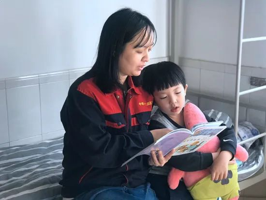

风暴眼中武汉人：我再也忍不住失声痛哭丨人间
原文链接 备份链接 作为风暴眼中的一位普通市民，我在自己意识里构建出的安全感，在生活的随机性前，就如潮水中的沙堡，一下就被分崩离析了。 配图 | B站UP主林晨同学自制视频 征 稿 从2019年12月8日首例武汉新型冠状病毒肺炎患者出现， …
若干年后回望，这一定是一段值得铭记的日子。因为新冠肺炎疫情，许多家庭无法团圆。疫情数据地图的每次刷新都令人揪心。我们和千万武汉人在一起，这不只是一句安慰，因为没有人能够置身事外。
之前，我们向用户征集这段时间的故事，鼓励大家写下属于自己的“武汉日志”。现在，我们挑选出其中的几篇，分享给大家。
医生们追求，有时去治愈、常常去帮助、总是去安慰。我们相信，尽可能分享有关此次疫情的事实，对他人就是一种安慰剂，能够帮助社会共克时艰。
如果你还有愿意记录下来的故事，欢迎继续发给我们，文字、图片、视频均可，如果您没有时间成文或拍摄，可提供线索并留下联系方式。
要求真实、原创，文字内容不少于1000字，发送时请注明署名及联系方式。
中国青年报社征集邮箱：wuhanstory@126.com

卫楠在丈夫的宿舍里给孩子讲故事。
作者 | 卫楠
2020年1月17日，腊月廿三，我要带两个孩子去武汉，找爸爸。
匆忙收拾完他们的东西，我们赶到机场。太原已经有了春运的感觉，我怀里抱着小的，手里领着大的，心里盘算，奶粉够吃5天，纸尿裤、奶瓶、大宝的作业……生怕落了点什么。
起飞了，不到1岁的小宝不怕，大宝有些怕，我心里也是忐忑的，这是我们三个第一次一起坐飞机。他们的爸爸在武汉“修地铁”，事实上，我们俩都是“工程人”。
我想起出发前老公的叮嘱：一定要给孩子戴好口罩，最近咳嗽的人比较多。可小宝太小，戴不了。我扫视了一下机舱内，也没几个戴口罩的，逐渐安心了，暗自埋怨他大惊小怪。
到达武汉已是晚上，有点冷。怀中的小宝早已熟睡，大宝却异常兴奋：“妈妈快看，武汉欢迎您，你看那小神龙！”车穿过大桥，我看着平静的水面倒映灯光，想起太原的汾河早已冰封，默默计划着，这一周要带孩子看长江大桥，看武汉大学，看不到樱花，也至少要沾点文化气息。
1月21日，离年关越来越近，老公依然很忙。
没有老人帮忙，我第一次自己带两个孩子。老公的宿舍没有电视，手机是大宝英语辅导班打卡的工具，楼道里充满84消毒液的味道。
直到下午，我突然意识到，很久没有听到龙门吊嘀嘀的警报声了，也没有出渣车的声音……盾构机出问题了？作为工程人，我多少知道，盾构机停工1天损失有多大，更何况是停在武汉地铁工期那么紧张的时候。一定是发生了什么。
算了算，我已经3天没有看见老公了。打电话，他只说忙。
1月22日，好几天没回家的他，晚上10点突然到家了。孩子们早就睡了，他站在门外，脱掉工装，让我拿个箱子放衣服、安全帽。
这一系列“神操作”，让我觉得不可理解。此时，远在山西的母亲打电话，告诉我最近武汉流行一种肺炎，一定不要出门。我赶紧用手机上网，看到钟南山院士确认新冠病毒“人传人”的消息已经到处都是。以至于我听到相关报道的配乐都觉得心惊肉跳。
老公不停地打电话，一直在问，“有没有口罩，有没有消毒水”。
“这个冬天这里有流行疾病。”我想，“但应该跟流感差不多，可能稍微重点吧？”我还没有意识到，此时地铁施工现场以外的武汉城，一个魔盒正在打开。
1月23日，腊月廿九。新闻里说，武汉开始封城，社区也在行动，我才觉得恐慌，打电话让老公去抢购物资。说实话，我根本不知道应该买什么，口罩、消毒水肯定是不奢望了，囤点方便面、火腿肠也好。
“你不是总说自己很能行吗，现在想办法，咱们逃离武汉吧！咱们回太原、回老家。”我对老公说。他告诉我，别慌张，别说没办法出去，就是有办法也不出去。施工现场本就是个相对封闭的环境，食堂一直有物资储备，可以保证大家的生活。公司早就从深圳、太原、西安等地采购了一批口罩、体温计等防疫用品，保证武汉这边的用量。钟南山院士也来武汉了，全国那么多优秀的医生都来武汉了，我们为什么要逃离？逃出去有风险，坑了家人或者无辜的人怎么办？
其实道理我也懂，只是身临险境时，我心中不免慌乱。看着睡梦中的两个孩子，我祈求上天，我从没做过坏事，不要让我的家人被感染啊，我的孩子还小，小宝才刚刚来到这个世上，请不要让她感受到悲伤。那一夜，我睡不着。
1月24日，除夕。食堂准备了年夜饭，鸡腿、炸小鱼、牛肉、西兰花……全部装在饭盒里，一份份送到宿舍门口。这是小宝的第一个春节，我还切了根香肠，凉拌了皮蛋，凑够6个菜，过年还是要仪式感的。老公没事的时候总喜欢喝点小酒，但这个除夕他一口酒都没喝。
他说，现在是防疫的关键时期，项目上连着家属、劳务工170多人，盾构机也在洞里“停机保压”，绝对不能掉以轻心。吃了年夜饭，他开始发视频，一个一个宿舍拜年，叮嘱大家有干咳、发热症状一定要上报，生活上有什么需求也一定要说。发完视频，他穿好工装、戴好安全帽去洞里进行巡查。
我站在宿舍的窗户旁，能看着他走进施工现场的大门。我担心着，他过马路的时候有人和他擦肩而过，会不会把病毒传染给他？工地上会不会有人在感染潜伏期内？
太原的同事发来信息，我心烦，回了一个哭脸。她说：“你真的去了武汉？”“是，我真的在武汉，一个表情你都能猜出来。”
她说，你一直就是个开心人儿，什么时候发过这样的表情啊。
翻看手机，除了亲友的安慰，只有新冠肺炎疫情的信息。“妈妈，快看解放军，快看他们要来武汉了。”大宝说。我看向电脑屏幕，瞬间热泪盈眶。这是有小宝后我第一次眼中有泪水，我看见战士们登上飞机，冰冷的空气好像忽然有了暖意。我想，大概只有此刻身处武汉的人才能真正体会，什么是绝望，什么是希望。
2月14日是情人节。15年了，这是我和老公在一起后，一起过的第一个情人节。没有玫瑰花，他陪着大宝上英语课、打卡，还是那口蹩脚的“山英”。我逗着小宝玩，5平方米的宿舍有了家的味道。病毒还在肆虐，我们无法出门，可是已经学会享受这“不一样”的假期。
中午，他拿出酒杯，对着电脑屏幕和工地的兄弟们一起举杯，虽然他们就在隔壁。大宝在我身边，画着医生打败病毒的图画，小宝瞪大双眼看着哥哥。窗外葱绿，武大的樱花快开了吧，家乡的迎春花是不是已经开了。
作为一名普通的基建人，我和老公常年在外施工。城市里的地铁线路是我们在地球上的足迹，也是我们青春的见证。2019年，我和他第一次来武汉，就在武汉大学旁边，我们约定好，等到隧道贯通时，一起去看樱花。长期以来，我们总觉得自己在给城市留下印记，但这一次，武汉给了我们一场不平凡的记忆。
我感叹，时间你走得快点吧，疫情赶紧过去。我可以不看樱花，不去长江大桥，但让我门前的马路恢复车水马龙吧。让人们摘掉口罩，让“大白”们回家，让我们都可以拥抱每一个想拥抱的人。下一个天亮，愿施工现场机器轰鸣，出渣车进进出出，我们戴着安全帽穿梭在工地上，管片起吊，一切正常，我们开工了。
（作者系中铁十二局集团第二工程有限公司盾构施工分公司员工）
中国青年报·中国青年网出品
微信编辑 | 陈轶男

觉得好看请点这里
原文链接 备份链接 作为风暴眼中的一位普通市民，我在自己意识里构建出的安全感，在生活的随机性前，就如潮水中的沙堡，一下就被分崩离析了。 配图 | B站UP主林晨同学自制视频 征 稿 从2019年12月8日首例武汉新型冠状病毒肺炎患者出现， …
原文链接 备份链接 我是河南信阳人，在武汉读书，毕业后留在武汉，现居洪山区，是一个1岁多的孩子的妈妈。武汉是疫情中心，老家信阳距离武汉很近，现在也是疫情重点排查城市。 1月20号，“封城”三天前，钟南山院士提到新冠肺炎存在人传人现象。这个 …
原文链接 备份链接 疫情爆发到现在，已经过去了两个多月的时间。 这段时间里，疫情之下的普通人，都经历了什么？ 这期节目，我们邀请了到武汉前线支援的医务工作者晓阳，春节期间帮女儿向老公出柜的心一妈妈，曾因封村而险些断掉抗病毒艾滋药物的小黑， …
原文链接 备份链接 有武汉人滞留在外地，就有外地人滞留在武汉。 1月23日凌晨，武汉宣布封城。 2月10日，湖北省以外的地区陆续开工，这让滞留在武汉的人更希望知道出城的日期。 恰值人口高峰流动期，没有数据统计滞留在武汉的人到底有多少。但各 …
原文链接 备份链接 以下文章来源于世风 ，作者吕晓宇 【疫情之下】是苍衣社开设的非虚构故事专栏，记录在新型冠状病毒疫情蔓延时，普通中国人的抗疫报告。 大家好，我是脸叔。 随着新冠肺炎的爆发，湖北地区的居民工作和生活都受到很大的影响。 …